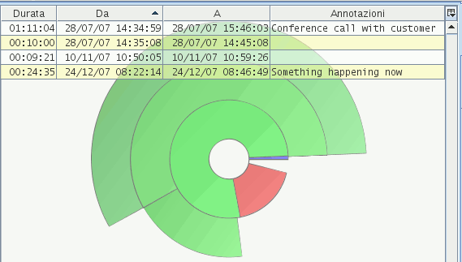

From the progresses table you can view and edit task actions.

Illustration
1: the actions table
It shows a row for every action that belongs to the task currently selected on the task tree (left side of the window).
The table columns show you the duration, the start time, end time and notes for every action.
To sort the rows on a certain column, click on the column header. Click a second time to revert the sorting, and a third time to remove the sorting.
Use CTRL-F to search within the notes column.
Use F3 to move the selection from the current match and the next.